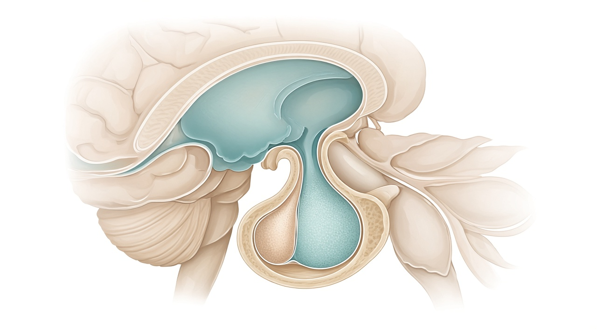

Pathologies associées aux adénomes hypophysaires

Les adénomes hypophysaires peuvent sécréter différentes hormones ou être non sécrétants. Voici les principales pathologies associées :
Acromégalie / Gigantisme
Excès d’hormone de croissance (GH). Chez l’adulte → acromégalie. Chez l’enfant ou l’adolescent → gigantisme.
Prolactinome
Adénome sécrétant de la prolactine. C’est le type d’adénome hypophysaire le plus fréquent. Il peut entraîner troubles des règles, galactorrhée, infertilité, baisse de libido, et chez l’homme dysfonction érectile. Le traitement de première intention est le plus souvent médical (agonistes dopaminergiques).
Maladie de Cushing
Excès de cortisol dû à un adénome corticotrophe (sécrétant de l’ACTH). Signes : prise de poids facio-tronculaire, visage « en pleine lune », vergetures, hypertension, diabète, fragilité osseuse, troubles de l’humeur…
Adénomes thyréotropes (très rares)
Sécrétion excessive de TSH → hyperthyroïdie d’origine centrale.
Adénomes gonadotropes et non fonctionnels
Souvent cliniquement non fonctionnels. Ils se révèlent généralement par un effet de masse (maux de tête, troubles visuels) ou une insuffisance hypophysaire.